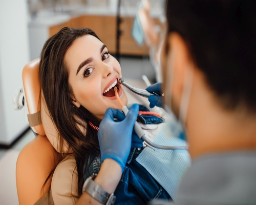
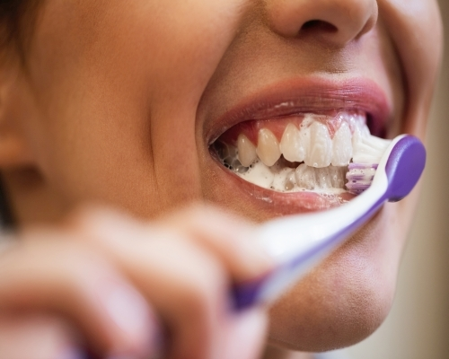

English
English
Detaylı Diş Temizliği - Kuretaj - İstanbul
Atlantik Diş Kliniği - İstanbul
Detaylı diş temizliği - Kuretaj nedir? - Diş taşı (tartar) - İstanbul
Diş taşı (Tartar) nedir?
Gün boyu tüketilen gıdalar ve içecekler diş yüzeyinde zamanla diş plağına dönüşen kalıntılar bırakır. Zararlı bakterilerden oluşan diş plağı diş fırçalama işleminden yaklaşık 12 saat sonra diş yüzeyine tutunur. Düzenli fırçalama yapılmadığında, dişler doğru ve etkili fırçalanmadığında diş yüzeyindeki diş plağı tükürüğümüzdeki minerallerin etkisiyle sertleşir diş taşı (tartar) oluşur. Dişlerimizi diş plağı ve diş taşı oluşumundan korumak için günde en az 2 defa fırçalamalıyız.
Kireç benzeri olan diş taşı bireyin diş ve diş eti sağlığını kötü etkiler. Tartar, diş eti iltihapları ve diş eti çekilmesi sorunlarına hatta ilerlediğinde diş kaybına dahi yol açabilir. Diş eti çekilmesi başladığında diş taşı çekilen diş etinin yerini doldurur. Böyle bir durumla karşı karşıya kalan hastaların bir kısmının diş eti hastalıklarının farkına varmadığı ya da oldukça geç farkına vardığı gözlemlenmiştir.
Diş taşı nedeniyle yaşanabilecek olumsuzluklardan korunmak için düzenli diş hekimi kontrolleri ile diş taşı temizleme işlemi yapılmalıdır.
Diş taşı neden olur?
Tartar bireyin;
- Diş fırçalama alışkanlığının olmaması ya da dişlerini doğru fırçalamaması,
- Tükürük yapısı,
- Diş ipi kullanmaması ya da diş ipini doğru kullanmaması neticesinde dişlerin arasında gıda artıklarının kalması,
- Ağız gargarası kullanmaması,
- Tek taraflı çiğneme alışkanlığı,
- Sorunlu dolguları,
- Ağız ve diş sağlığı konusunda özensizliği sebebiyle oluşur.
Tartar oluşumu nasıl önlenir?
Diş taşı oluşumunu önlemek için dişler düzenli ve doğru şekilde fırçalanmalı, içerisinde florürlü diş macunları kullanılmalı,diş ipi kullanılmalı,gargara yapılmalı, diş sağlığını olumsuz etkileyecek gıdaları tüketmemeye dikkat edilmelidir.
Diş taşı temizliğinizden sonra hekiminizden bakım önerileri alabilirsiniz.
Diş taşı temizliği nasıl yapılır? Detertrajın aşamaları nelerdir?
Tartar temizliğiherkese her yaşta 6 ayda bir diş hekimi tarafından yapıImalıdır. Dişlere, diş etlerine zarar veren diş taşları oluştuysa, ağız ve diş sağlığı için hemen detertraj (diş taşı temizliği) olarak adlandırılan çoğu zaman acısız ve kanamasız olan diş taşı temizliği yaptırılması gerekir.
Halk arasındaki söylemiyle diş tartarı temizleme işlemi için:
- İlk olarak diş hekimi ağız içi muayene yapar,
- Standart diş temizliği veya ileri düzey diş temizliğine gerek olup olmadığına hekim karar verir,
- Ultrasonik cihazlar ve bazı aletler kullanarak diş eti dokusuna zarar vermeden diş eti çizgisindeki ve dişlerinizin arasındaki plakları, diş taşlarını temizler,
- Diş taşları diş köküne doğru ilerlediyse küretaj işlemi yapılır,
- Kullanılan ultrasonik temizleyici başlıklar, diş taşı olan kısma mikro titreşimler vererek tartarın parçalanmasını sağlarlar. Ardından mekanik fırça ile polisaj yapılır ve bu işlemle dişlerdeki lekeler ortadan kaldırılır.
- Tartar temizleme tedavisi için anestezi nadiren kullanılır,
- Diş taşı temizliği sonrası yeni diş taşı oluşumuna mani olmak ve dişleri parlatmak için polisaj
- Diş hekimi tarafından hastalara diş taşı temizliği sonrası ağız hijyeninin devamı için “Diş nasıl doğru fırçalanır ve diş ipi kullanımı nasıl olmalıdır?” sorularının cevapları anlatılır.
- Diş taşı temizliği esnasında bazı dişlerin kök yüzeyleri de temizlenmelidir. Bu durumda diş hekimi küretaj Diş taşını dikkatli, kontrollü olarak çıkarır, ilgili bölgeyi temizler. Bu sayede diş eti hastalıklarına karşı koruyucu bir işlem yapılmış olur.
Detertraj, Polisaj, Küretaj nedir?
Diş taşı temizliğinde hastada diş eti hastalığının olup olmaması, diş taşlarının derinliği boyutu gibi unsurlar kullanılacak yöntemi belirlemede etkin rol oynar. Bu yöntemler:
- Detertraj
- Küretaj
- Küretaj diş tedavisi nasıl yapılır?
- Hastanın hafif düzeydeki diştaşları temizlenir.
- Hastaya lokal anestezi uygulanır.
- Hastanın dişetlerine ufak kesiler atılıp, diş eti kökten ayrılır, diş eti altındaki iltihap ve diş taşları temizlenir.
- Derin temizleme işlemi bitince dişetleri dikilerek, tekrar diş etlerinin dişe tutunması sağlanır.
- Küretaj Sonrası Nelere Dikkat Edilmeli?
- 48 saat boyunca sigara içilmemeli,
- Alkol alınmamalı,
- Sıcak, soğuk ya da yoğun baharatlı gıdalar yenmemeli,
- Ağız ve diş sağlığı için yüz bölgesine darbe alınmamalıdır.
- Polisaj nedir - Nasıl yapılır?
Diş hekimi tarafından ultrasonik cihazlarla dişlerdeki tartarın temizlenme işlemidir. Sık tercih edilen bu yöntemde hastanın diş eti hastalığı olmamalıdır.
Diş eti hastalıklarının olduğu durumlarda diş taşı temizliğinde tercih edilen güvenli ve yaygın bir yöntemdir.Bu yönteme; diş taşı temizliğini, genel diş sağlığını, ağız hijyenini çok uzun süre ihmal etmiş olan hastalarda ihtiyaç duyulur. Çok yoğun ve derin diş taşlarının olduğu durumlarda kullanılan bir yöntemdir.
Diş taşı ilerleyerek kök yüzeyinde, dişlerde, diş eti altında yaygın şekilde bulunur ve diş eti iltihabına neden olur. Tedavi edilmezse bu durum dişlerde sallanma ve maalesef diş kaybına kadar gider. Vücuttaki diğer iltihaplı oluşumlarda iltihabı gidermek için antibiyotik kullanımı çoğu zaman yeterli iken, diş eti iltihaplanmalarının tedavisinde antibiyotik yeterli olmayabilir. Dişlerde, diş eti altında, kök yüzeyinde biriken diş taşı ve iltihabın temizlendiği derin temizlik yöntemine küretaj denir.
Diş taşları tamamen temizlendikten sonra yapılan diş cilası işlemine polisaj denir. Diş hekimi 15-20 dakika süreyle özel bir fırça yardımı ile dişin çiğneyici yüzeyinden birer birer geçer. Diş çiğneyici yüzeyinde diş taşı ve bakteri birikmesinin önler. Diş polisaj işlemi ile dişlerde çürük oluşmasının önüne geçilir. Hassas dişler için rahatlıkla uygulanabilir.
Diş Taşı Temizliği Sonrası
- Diş taşı temizliği sonrası oluşan boşluk ilk birkaç gün hastanın dilinin sık sık pütürlü hissedilen o bölgeye takılmasına neden olabilir.
- Diş taşlarının yoğun olduğu, diş eti hastalığının ilerleyen döneminde diş taşı temizliği yapıldıysa dişler bir miktar sallanabilir.
- Sıcak - soğuk gıda tüketimi yine ilk birkaç gün hassasiyete sebep olabilir. Bu hassasiyetler normaldir.
- Detertraj işleminin ardından ilk günlerde dişlerde renk değişikliğine neden olan tütün ürünleri, çay, kahve, gıda boyası içeren besinler, asitli içecekler tüketilmemelidir.
Tartar temizleme işleminin faydaları
Diş taşı temizliği, ağız ve diş sağlığını düşünen herkesin düzenli olarak yaptırması gereken bir işlemdir. Dişeti çekilmelerinden iltihaplanmaya kadar ciddi diş problemleri oluşturacak hatta diş kayıplarına neden olacak diş taşları temizlendiğinde dişlerinizin sağlıklı yapısına dönmesi hızlanacaktır.
Diş taşı temizliği tedavisinin faydaları:
- Diş eti hastalıkları, diş eti iltihabı, diş eti çekilmesi ve diş çürüklerinin önüne geçer.
- Kemik iltihaplarını engeller.
- Diş sağlığınız korunur.
- Diş taşına bağlı ağız kokusu, diş eti kanamalarını engellenir.
- Olası diş kayıplarının önüne geçilir.
- Diş taşı temizliği sonrası oluşan boşluk ile hastalar ağız içinde ferahlık hisseder
- Hasta işlem sırasında acı duymadığı için diş taşı temizleme işlemi yaptırmaktan korkmaz.
Diş taşı temizliği (Detertraj) dişlere zarar verir mi? Diş temizletmek zararlı mı?
Diş taşı temizliği (detertraj) işleminin tehlikeli olduğu söylentisi hiçbir bilimsel kanıta dayanmaz. Asıl tehlikeli olan diş taşlarının temizlenmemesi sonucu ortaya çıkabilecek durumlardır.
Uzun yıllar detertraj uygulanmamış dişlerde diş eti çekilmesi, diş eti hastalıkları, diş kaybı yaşanabilir. Yaşanan diş kaybı neticesinde ise çene kemiğinde kemik kaybı oluşma riski vardır. Bu durumda bir hastaya yapılması gereken başka bir diş tedavisinde greft kemik tozu işlemini uygulanmalıdır. Bütün bu işlemler diş taşı temizleme işleminden daha yorucu daha acılıdır.
Tartar oluşumunu engellemek için ağız hijyenine özen göstermek, düzenli diş hekimi kontrolleri, diş taşı temizliği işlemleri ağız ve diş sağlığını korumanın en kolay yollarındandır.
İstanbul diş taşı sık sorulan sorular
Diş taşı temizliği fiyat bakımından net bir miktar ile karşımıza çıkmaz. Çünkü her hasta için farklı olan diş taşı boyutu, diş taşı yoğunluğu, küretaj yapılma gereklikliği, diğer tedavilere ihtiyaç duyma durumu fiyatı etkilemektedir. Detaylı ve net bilgi için bizimle iletişime geçiniz.
Uzman diş hekimleri tarafından gerekli materyaller kullanılarak dikkatle yapılan diş taşı temizliği diş minesine ve dişe zarar vermez. Diş taşı temizletmek, zararlı değildir.
Derinleşmiş diş taşlarının diş köklerinden temizlendiği bununla beraber, diş kökü üzerindeki nekrotik dokuların da temizlendiği küretaj işlemi 40-60 dakika kadar sürer.
Diş taşı dişlerde renk değişikliği, diş eti enfeksiyonu, diş eti çekilmesi, diş kaybı hatta çene kemiğinde erimeye neden olabilir.Tartar ağız ve diş sağlığına zararlıdır.